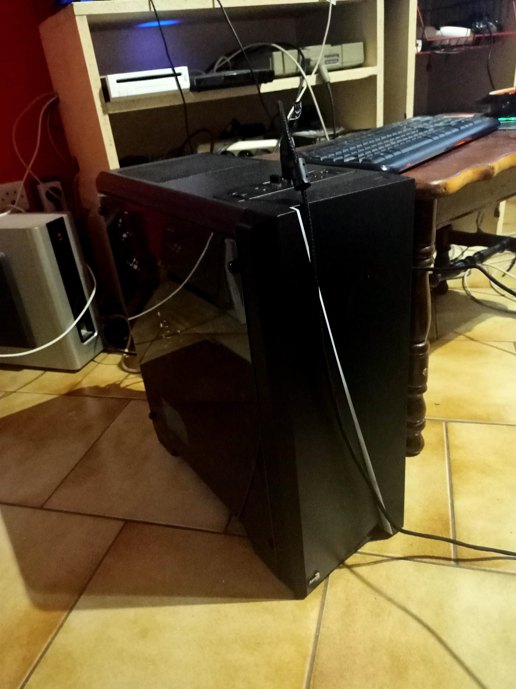

À propos de moi

Bosc Zaki
Étudiant passionné par l'informatique, les jeux vidéo, la philosophie et les nouvelles technologies. Toujours à la recherche de nouvelles expériences et compétences.
Compétences techniques
Filmora

95%
Maintenance Informatique

75%
FL Studio

30%
Instrumental composée
Exemple de musique réalisée avec FL Studio :